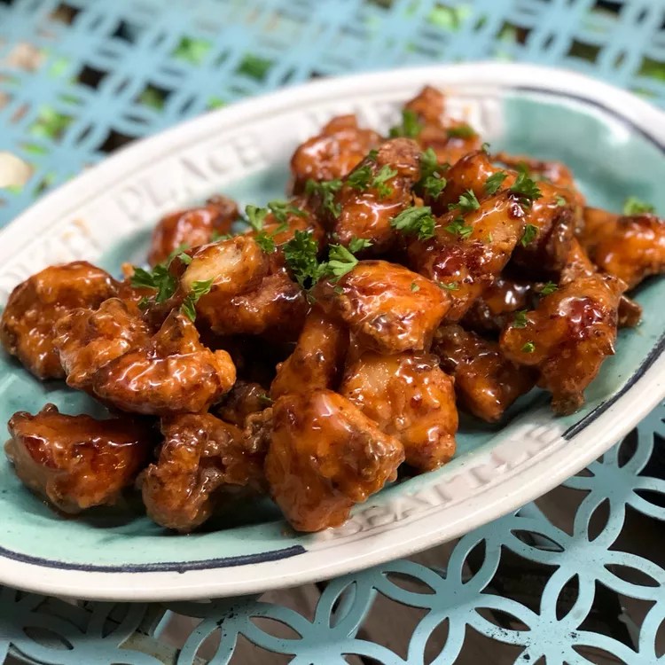

Odin Recipes
Sauce

Bang Bang Chicken
This bang bang chicken is a wonderful Americanized version of an extremely popular Sichuan Chinese dish. With
twice-fried chicken, you get the crispy fried breading you'd expect, and the bang bang sauce drizzle makes the
entire dish spectacular. You'll love this more than any restaurant version. Pay attention to the notes in the
directions
Ingredients
- ⅓ cup milk
- large egg
- pound boneless, skinless chicken breasts, cut into 1-inch cubes
- ¼ cup potato starch
- ¼ cup all-purpose flour
- ½ teaspoon salt
- ¼ teaspoon ground black pepper
- ¼ teaspoon shichimi togarashi (Japanese red pepper condiment)
- 2 cups oil for frying, or as needed
- ¼ cup mayonnaise
- 2 tablespoons honey
- tablespoons sweet chili sauce
- teaspoon gochujang (Korean hot pepper paste)
- 1 teaspoon gochujang (Korean hot pepper paste)
Steps
- Whisk together milk and egg in a large bowl until well combined. Add chicken; stir to coat and allow to
marinate for 15 minutes. Drain and discard egg mixture.
- Combine potato starch, flour, salt, pepper, and shichimi in a medium bowl. Pour into a large plastic
resealable bag. Add chicken; seal the bag and shake until chicken is well coated.
- Heat 2 inches oil in a deep saucepan over medium heat to 325 degrees F (165 degrees C).
- Working in batches of about 5 to 8 pieces at a time, cook chicken in hot oil for about 90 seconds. Remove to
a paper towel-lined plate; keep each batch separate.
- Increase oil temperature to 350 degrees F (175 degrees C). The oil should be continuously boiling at this
point. Carefully re-add the first batch of chicken and fry for another 90 seconds. Remove to another paper
towel-lined plate. Repeat with remaining batches of chicken.
- Mix together mayonnaise, honey, sweet chili sauce, and gochujang in a large serving bowl until combined.
Toss fried chicken with sauce to coat
Find more recipes here
Lasagna